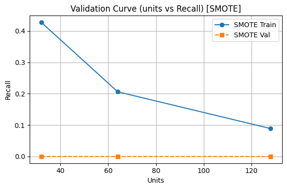

Red LSTM#
1. Librerias#
# =========================================
# 1. IMPORTACIONES
# =========================================
import time
import numpy as np
import pandas as pd
import seaborn as sns
import matplotlib.pyplot as plt
from sklearn.model_selection import train_test_split, GridSearchCV
from sklearn.preprocessing import StandardScaler, OneHotEncoder
from sklearn.compose import ColumnTransformer
from sklearn.pipeline import Pipeline
from sklearn.impute import SimpleImputer
from sklearn.metrics import recall_score, make_scorer, precision_score, f1_score, roc_auc_score
from sklearn.utils.class_weight import compute_class_weight
from imblearn.over_sampling import SMOTE, ADASYN
from tensorflow.keras.models import Sequential
from tensorflow.keras.layers import LSTM, Dense, Dropout, BatchNormalization
from tensorflow.keras.callbacks import EarlyStopping, CallbackList
from scikeras.wrappers import KerasClassifier
from sklearn.model_selection import StratifiedKFold
from tensorflow.keras.metrics import Recall as KerasRecall
from sklearn.metrics import confusion_matrix, ConfusionMatrixDisplay
import sklearn
import scikeras
print("scikit-learn:", sklearn.__version__)
print("scikeras:", scikeras.__version__)
scikit-learn: 1.4.2
scikeras: 0.11.0
2.Carga de Datos#
# =========================
# 1. Carga de datos
# =========================
df = pd.read_csv(r"C:\Users\DELL\Desktop\Aprendizaje_de_Maquina\credit_risk_the_end.csv")
# =========================
# 2. Definición de variable objetivo
# =========================
# La variable 'incumplimiento_credito' es binaria:
# 1 → el cliente incumplió el pago
# 0 → el cliente no incumplió el pago
y = df["incumplimiento_credito"]
# =========================
# 3. Variables predictoras
# =========================
X = df.drop(columns=["incumplimiento_credito"])
# =========================
# 4. Separar por tipo de dato
# =========================
num_cols = X.select_dtypes(include=["int64", "float64"]).columns
cat_cols = X.select_dtypes(include=["object"]).columns
3.Preprocesamiento de Datos#
df = pd.read_csv(r"C:\Users\DELL\Desktop\Aprendizaje_de_Maquina\credit_risk_the_end.csv")
X = df.drop(columns=["incumplimiento_credito"])
y = df["incumplimiento_credito"]
# Separar por tipo de dato
num_cols = X.select_dtypes(include=["int64", "float64"]).columns
cat_cols = X.select_dtypes(include=["object"]).columns
# Pipelines de preprocesamiento
num_transformer = Pipeline([
("imputer", SimpleImputer(strategy="mean")),
("scaler", StandardScaler())
])
cat_transformer = Pipeline([
("imputer", SimpleImputer(strategy="most_frequent")),
("onehot", OneHotEncoder(handle_unknown="ignore"))
])
preprocessor = ColumnTransformer([
("num", num_transformer, num_cols),
("cat", cat_transformer, cat_cols)
])
# Aplicar transformación
X_proc = preprocessor.fit_transform(X)
X_proc = X_proc.toarray() if hasattr(X_proc, "toarray") else X_proc
X_proc = X_proc.reshape((X_proc.shape[0], 1, X_proc.shape[1]))
# Split
X_train, X_test, y_train, y_test = train_test_split(X_proc, y, test_size=0.2, stratify=y, random_state=42)
4.Gridsearch#
from sklearn.model_selection import StratifiedKFold, GridSearchCV
from sklearn.metrics import make_scorer, recall_score
from tensorflow.keras.models import Sequential
from tensorflow.keras.layers import LSTM, Dense, Dropout, BatchNormalization
from tensorflow.keras.callbacks import EarlyStopping, Callback
from tensorflow.keras.metrics import Recall as KerasRecall
from tensorflow.keras import backend as K
from scikeras.wrappers import KerasClassifier
from imblearn.over_sampling import SMOTE, ADASYN
from sklearn.utils.class_weight import compute_class_weight
import numpy as np
import time
# -------------------------------
# Callback para registrar learning rate
# -------------------------------
class LearningRateLogger(Callback):
def on_train_begin(self, logs=None):
self.lrs = []
def on_epoch_end(self, epoch, logs=None):
lr = float(K.get_value(self.model.optimizer.learning_rate))
self.lrs.append(lr)
# -------------------------------
# 1. Hiperparámetros (grilla)
# -------------------------------
param_grid = {
# Capacidad de la capa LSTM
"model__units": [32, 64, 128, 256],
# Tasa de dropout para regularización
"model__dropout_rate": [0.2, 0.3, 0.4, 0.5],
# Tamaño del batch
"batch_size": [32, 64, 128, 256],
# Número máximo de épocas (EarlyStopping interrumpirá antes si no mejora)
"epochs": [30, 50, 70, 100],
# Fracción de datos usados para validación interna
"validation_split": [0.1, 0.2, 0.3]
} # ← Esta llave faltaba
results = []
# -------------------------------
# 2. Loop de técnicas de balanceo
# -------------------------------
for method, sampler in {
'SMOTE': SMOTE(random_state=42),
'ADASYN': ADASYN(random_state=42),
'class_weight': None
}.items():
print(f"\n Técnica de balanceo: {method}")
# 2.1 Prepara X_res, y_res y class_weight
if sampler:
X_flat, y_flat = sampler.fit_resample(
X_train.reshape(len(X_train), -1), y_train
)
X_res = X_flat.reshape(len(X_flat), 1, -1)
y_res = y_flat
class_weight = None
else:
X_res, y_res = X_train, y_train
w = compute_class_weight('balanced', classes=np.unique(y_res), y=y_res)
class_weight = dict(enumerate(w))
# 2.2 Define LSTM factory
def create_lstm_model(units=32, dropout_rate=0.3):
model = Sequential([
LSTM(units, input_shape=(1, X_res.shape[2])),
BatchNormalization(),
Dropout(dropout_rate),
Dense(1, activation="sigmoid")
])
model.compile(
optimizer="adam",
loss="binary_crossentropy",
metrics=[KerasRecall(name="recall_clase_1")]
)
return model
# 2.3 Configura el clasificador y GridSearch
lr_logger = LearningRateLogger()
base_clf = KerasClassifier(
model=create_lstm_model,
verbose=0,
class_weight=class_weight,
callbacks=[
EarlyStopping(
patience=3,
restore_best_weights=True,
monitor="val_recall_clase_1",
mode="max"
),
lr_logger
]
)
cv = StratifiedKFold(n_splits=2, shuffle=True, random_state=42)
grid = GridSearchCV(
estimator=base_clf,
param_grid=param_grid,
scoring=make_scorer(recall_score, pos_label=1),
cv=cv,
n_jobs=17
)
# 2.4 Ejecuta GridSearch y mide tiempo
t0 = time.time()
grid.fit(X_res, y_res)
fit_minutes = (time.time() - t0) / 60
# 3. Extrae los mejores hiperparámetros
best_params = grid.best_params_
units = best_params["model__units"]
dropout = best_params["model__dropout_rate"]
batch_size = best_params["batch_size"]
epochs = best_params["epochs"]
val_split = best_params["validation_split"]
# 4. Reentrena manualmente para capturar history
lr_logger_final = LearningRateLogger()
es = EarlyStopping(
patience=3,
restore_best_weights=True,
monitor="val_recall_clase_1",
mode="max"
)
final_model = create_lstm_model(units=units, dropout_rate=dropout)
history = final_model.fit(
X_res, y_res,
batch_size=batch_size,
epochs=epochs,
validation_split=val_split,
class_weight=class_weight,
callbacks=[es, lr_logger_final],
verbose=0
)
hist_dict = history.history
# 5. Predicción y métrica en test
y_prob = final_model.predict(X_test).ravel()
y_pred = (y_prob > 0.5).astype(int)
rec = recall_score(y_test, y_pred, pos_label=1)
# 6. Guardar todo en results
results.append({
"Técnica": method,
"Mejores parámetros": best_params,
"Recall test clase 1": rec,
"Tiempo (min)": round(fit_minutes, 2),
"Modelo": final_model,
"Historial": hist_dict,
"Probabilidades": y_prob,
"Predicciones": y_pred,
"LR Logger": lr_logger_final
})
Técnica de balanceo: SMOTE
---------------------------------------------------------------------------
TerminatedWorkerError Traceback (most recent call last)
Cell In[5], line 113
111 # 2.4 Ejecuta GridSearch y mide tiempo
112 t0 = time.time()
--> 113 grid.fit(X_res, y_res)
114 fit_minutes = (time.time() - t0) / 60
116 # 3. Extrae los mejores hiperparámetros
File c:\Users\DELL\anaconda3\envs\KrakenData\lib\site-packages\sklearn\base.py:1474, in _fit_context.<locals>.decorator.<locals>.wrapper(estimator, *args, **kwargs)
1467 estimator._validate_params()
1469 with config_context(
1470 skip_parameter_validation=(
1471 prefer_skip_nested_validation or global_skip_validation
1472 )
1473 ):
-> 1474 return fit_method(estimator, *args, **kwargs)
File c:\Users\DELL\anaconda3\envs\KrakenData\lib\site-packages\sklearn\model_selection\_search.py:970, in BaseSearchCV.fit(self, X, y, **params)
964 results = self._format_results(
965 all_candidate_params, n_splits, all_out, all_more_results
966 )
968 return results
--> 970 self._run_search(evaluate_candidates)
972 # multimetric is determined here because in the case of a callable
973 # self.scoring the return type is only known after calling
974 first_test_score = all_out[0]["test_scores"]
File c:\Users\DELL\anaconda3\envs\KrakenData\lib\site-packages\sklearn\model_selection\_search.py:1527, in GridSearchCV._run_search(self, evaluate_candidates)
1525 def _run_search(self, evaluate_candidates):
1526 """Search all candidates in param_grid"""
-> 1527 evaluate_candidates(ParameterGrid(self.param_grid))
File c:\Users\DELL\anaconda3\envs\KrakenData\lib\site-packages\sklearn\model_selection\_search.py:916, in BaseSearchCV.fit.<locals>.evaluate_candidates(candidate_params, cv, more_results)
908 if self.verbose > 0:
909 print(
910 "Fitting {0} folds for each of {1} candidates,"
911 " totalling {2} fits".format(
912 n_splits, n_candidates, n_candidates * n_splits
913 )
914 )
--> 916 out = parallel(
917 delayed(_fit_and_score)(
918 clone(base_estimator),
919 X,
920 y,
921 train=train,
922 test=test,
923 parameters=parameters,
924 split_progress=(split_idx, n_splits),
925 candidate_progress=(cand_idx, n_candidates),
926 **fit_and_score_kwargs,
927 )
928 for (cand_idx, parameters), (split_idx, (train, test)) in product(
929 enumerate(candidate_params),
930 enumerate(cv.split(X, y, **routed_params.splitter.split)),
931 )
932 )
934 if len(out) < 1:
935 raise ValueError(
936 "No fits were performed. "
937 "Was the CV iterator empty? "
938 "Were there no candidates?"
939 )
File c:\Users\DELL\anaconda3\envs\KrakenData\lib\site-packages\sklearn\utils\parallel.py:67, in Parallel.__call__(self, iterable)
62 config = get_config()
63 iterable_with_config = (
64 (_with_config(delayed_func, config), args, kwargs)
65 for delayed_func, args, kwargs in iterable
66 )
---> 67 return super().__call__(iterable_with_config)
File c:\Users\DELL\anaconda3\envs\KrakenData\lib\site-packages\joblib\parallel.py:1952, in Parallel.__call__(self, iterable)
1946 # The first item from the output is blank, but it makes the interpreter
1947 # progress until it enters the Try/Except block of the generator and
1948 # reach the first `yield` statement. This starts the aynchronous
1949 # dispatch of the tasks to the workers.
1950 next(output)
-> 1952 return output if self.return_generator else list(output)
File c:\Users\DELL\anaconda3\envs\KrakenData\lib\site-packages\joblib\parallel.py:1595, in Parallel._get_outputs(self, iterator, pre_dispatch)
1592 yield
1594 with self._backend.retrieval_context():
-> 1595 yield from self._retrieve()
1597 except GeneratorExit:
1598 # The generator has been garbage collected before being fully
1599 # consumed. This aborts the remaining tasks if possible and warn
1600 # the user if necessary.
1601 self._exception = True
File c:\Users\DELL\anaconda3\envs\KrakenData\lib\site-packages\joblib\parallel.py:1699, in Parallel._retrieve(self)
1692 while self._wait_retrieval():
1693
1694 # If the callback thread of a worker has signaled that its task
1695 # triggered an exception, or if the retrieval loop has raised an
1696 # exception (e.g. `GeneratorExit`), exit the loop and surface the
1697 # worker traceback.
1698 if self._aborting:
-> 1699 self._raise_error_fast()
1700 break
1702 # If the next job is not ready for retrieval yet, we just wait for
1703 # async callbacks to progress.
File c:\Users\DELL\anaconda3\envs\KrakenData\lib\site-packages\joblib\parallel.py:1734, in Parallel._raise_error_fast(self)
1730 # If this error job exists, immediatly raise the error by
1731 # calling get_result. This job might not exists if abort has been
1732 # called directly or if the generator is gc'ed.
1733 if error_job is not None:
-> 1734 error_job.get_result(self.timeout)
File c:\Users\DELL\anaconda3\envs\KrakenData\lib\site-packages\joblib\parallel.py:736, in BatchCompletionCallBack.get_result(self, timeout)
730 backend = self.parallel._backend
732 if backend.supports_retrieve_callback:
733 # We assume that the result has already been retrieved by the
734 # callback thread, and is stored internally. It's just waiting to
735 # be returned.
--> 736 return self._return_or_raise()
738 # For other backends, the main thread needs to run the retrieval step.
739 try:
File c:\Users\DELL\anaconda3\envs\KrakenData\lib\site-packages\joblib\parallel.py:754, in BatchCompletionCallBack._return_or_raise(self)
752 try:
753 if self.status == TASK_ERROR:
--> 754 raise self._result
755 return self._result
756 finally:
TerminatedWorkerError: A worker process managed by the executor was unexpectedly terminated. This could be caused by a segmentation fault while calling the function or by an excessive memory usage causing the Operating System to kill the worker.
5.Tabla comparativa de métricas#
import warnings
# Suprimir TODOS los warnings (matplotlib, seaborn, keras, etc.)
warnings.filterwarnings("ignore")
# Crear lista con métricas por técnica
metricas = []
for r in results:
y_pred = r["Predicciones"]
y_prob = r["Probabilidades"]
metricas.append({
"Técnica": r["Técnica"],
"Recall": recall_score(y_test, y_pred),
"Precision": precision_score(y_test, y_pred, zero_division=0),
"F1-score": f1_score(y_test, y_pred, zero_division=0),
"AUC": roc_auc_score(y_test, y_prob),
"Tiempo (min)": r["Tiempo (min)"]
})
# Convertir a DataFrame y mostrar con formato
df_metricas = pd.DataFrame(metricas).set_index("Técnica")
df_metricas = df_metricas.round(4)
# Mostrar tabla
display(df_metricas)
# Visualización opcional como heatmap (valores más altos en verde)
plt.figure(figsize=(8, 4))
sns.heatmap(df_metricas, annot=True, cmap="Pastel1", fmt=".4f", linewidths=0.5)
plt.title(" Comparación de Métricas por Técnica de Balanceo")
plt.tight_layout()
plt.show()
| Recall | Precision | F1-score | AUC | Tiempo (min) | |
|---|---|---|---|---|---|
| Técnica | |||||
| SMOTE | 0.1111 | 0.1667 | 0.1333 | 0.4921 | 0.46 |
| ADASYN | 0.0000 | 0.0000 | 0.0000 | 0.6557 | 0.31 |
| class_weight | 0.3333 | 0.0857 | 0.1364 | 0.4542 | 0.17 |
6.Gráfico comparativo de Métricas por Técnica#
import warnings
# Suprimir TODOS los warnings (matplotlib, seaborn, keras, etc.)
warnings.filterwarnings("ignore")
# Recolectar métricas
metricas = []
for r in results:
y_pred = r["Predicciones"]
y_prob = r["Probabilidades"]
metricas.append({
"Técnica": r["Técnica"],
"Recall": recall_score(y_test, y_pred, pos_label=1),
"Precision": precision_score(y_test, y_pred, zero_division=0),
"F1-score": f1_score(y_test, y_pred, zero_division=0),
"AUC": roc_auc_score(y_test, y_prob)
})
# Crear DataFrame
df_metricas = pd.DataFrame(metricas).set_index("Técnica").round(4)
# Graficar
df_metricas.plot(kind="bar", figsize=(10, 6), colormap="Pastel1", rot=0)
plt.title(" Comparación de Métricas por Técnica de Balanceo", fontsize=14)
plt.ylabel("Valor")
plt.xlabel("Técnica")
plt.ylim(0, 1)
plt.grid(axis="y", linestyle="--", alpha=0.6)
plt.tight_layout()
plt.show()
7.Matrices de Confusión por Técnica de Balanceo#
# Filtrar modelos válidos
modelos_validos = [r for r in results if r.get("Modelo")]
# Crear figura con subplots: 1 fila, 3 columnas
fig, axes = plt.subplots(1, len(modelos_validos), figsize=(5 * len(modelos_validos), 4))
# Si solo hay un modelo, convertir axes a lista
if len(modelos_validos) == 1:
axes = [axes]
for ax, r in zip(axes, modelos_validos):
model = r["Modelo"]
y_pred = (model.predict(X_test) > 0.5).astype(int)
cm = confusion_matrix(y_test, y_pred)
disp = ConfusionMatrixDisplay(confusion_matrix=cm)
disp.plot(ax=ax, cmap="Pastel1", values_format="d", colorbar=False)
ax.set_title(f"{r['Técnica']}", fontsize=12)
ax.grid(False)
plt.suptitle("Matrices de Confusión por Técnica", fontsize=14)
plt.tight_layout()
plt.show()
4/4 ━━━━━━━━━━━━━━━━━━━━ 0s 11ms/step
4/4 ━━━━━━━━━━━━━━━━━━━━ 0s 10ms/step
4/4 ━━━━━━━━━━━━━━━━━━━━ 0s 9ms/step
8.Curvas ROC por técnica de Balanceo#
import warnings
warnings.filterwarnings("ignore")
from sklearn.metrics import roc_curve, auc
plt.figure(figsize=(8, 5))
for r in results:
y_prob = r.get("Probabilidades")
if y_prob is not None:
fpr, tpr, _ = roc_curve(y_test, y_prob)
roc_auc = auc(fpr, tpr)
plt.plot(fpr, tpr, label=f"{r['Técnica']} (AUC = {roc_auc:.2f})")
plt.plot([0, 1], [0, 1], "k--", alpha=0.6)
plt.title(" Curva ROC por Técnica")
plt.xlabel("False Positive Rate")
plt.ylabel("True Positive Rate")
plt.legend(loc="lower right")
plt.grid(True)
plt.tight_layout()
plt.show()
9.Gráfico de tiempo de entrenamiento#
# Asegurarse de tener df_resultados
df_resultados = pd.DataFrame(results)
# Establecer paleta Pastel1 con el número de técnicas disponibles
colors = plt.get_cmap("Pastel1").colors[:len(df_resultados)]
# Crear gráfico de barras verticales
plt.figure(figsize=(8, 5))
bars = plt.bar(
df_resultados["Técnica"],
df_resultados["Tiempo (min)"],
color=colors
)
# Etiquetas y estilo
plt.title("Tiempo de Optimización por Técnica de Balanceo", fontsize=14)
plt.xlabel("Técnica", fontsize=12)
plt.ylabel("Tiempo (minutos)", fontsize=12)
plt.grid(axis="y", linestyle="--", alpha=0.6)
# Mostrar valores arriba de cada barra
for bar in bars:
height = bar.get_height()
plt.text(bar.get_x() + bar.get_width() / 2, height + 0.2, f"{height:.2f}",
ha='center', va='bottom', fontsize=10)
plt.tight_layout()
plt.show()
10.Tabla de Hiperparámetros Óptimos por Técnica#
import pandas as pd
# 1) Construir lista de filas con hiperparámetros por técnica
hiperparametros_optimos = []
for r in results:
params = r.get("Mejores parámetros", {})
hiperparametros_optimos.append({
"Técnica": r.get("Técnica"),
"Units": params.get("model__units"),
"Dropout": params.get("model__dropout_rate"),
"Batch size": params.get("batch_size"),
"Epochs": params.get("epochs"),
"Valid. split": params.get("validation_split")
})
# 2) Crear DataFrame y poner la columna Técnica como índice
df_hiper = pd.DataFrame(hiperparametros_optimos).set_index("Técnica")
# 3) Mostrar con formato
display(
df_hiper.style
.format({
"Units": "{:.0f}",
"Dropout": "{:.2f}",
"Batch size": "{:.0f}",
"Epochs": "{:.0f}",
"Valid. split": "{:.2f}"
})
)
| Units | Dropout | Batch size | Epochs | Valid. split | |
|---|---|---|---|---|---|
| Técnica | |||||
| SMOTE | 32 | 0.20 | 32 | 30 | 0.20 |
| ADASYN | 32 | 0.20 | 32 | 30 | 0.20 |
| class_weight | 32 | 0.20 | 32 | 30 | 0.20 |
11. Curvas de Aprendizaje y Pérdida#
import matplotlib.pyplot as plt
# Extraer el mayor número de épocas registrado
max_epochs = max(len(h.get("loss", [])) for h in
(r["Historial"] for r in results) if isinstance(h, dict))
fig, axes = plt.subplots(1, 2, figsize=(14, 5))
# ——— 1) Loss conjunta ———
for r in results:
hist = r["Historial"] or {}
label = r["Técnica"]
epochs = range(1, len(hist.get("loss", [])) + 1)
axes[0].plot(epochs, hist.get("loss", []), label=f"{label} train")
axes[0].plot(epochs, hist.get("val_loss", []), linestyle="--", label=f"{label} val")
axes[0].set_title(" Loss por Época")
axes[0].set_xlabel("Épocas")
axes[0].set_ylabel("Loss")
axes[0].legend()
axes[0].grid(True)
# ——— 2) Recall conjunta ———
for r in results:
hist = r["Historial"] or {}
label = r["Técnica"]
epochs = range(1, len(hist.get("recall_clase_1", [])) + 1)
axes[1].plot(epochs, hist.get("recall_clase_1", []), label=f"{label} train")
axes[1].plot(epochs, hist.get("val_recall_clase_1", []),
linestyle="--", label=f"{label} val")
axes[1].set_title(" Recall Clase 1 por Época")
axes[1].set_xlabel("Épocas")
axes[1].set_ylabel("Recall")
axes[1].legend()
axes[1].grid(True)
plt.suptitle("Curvas de Aprendizaje Comparativas", fontsize=16)
plt.tight_layout(rect=[0, 0, 1, 0.95])
plt.show()
12.Curva Precision vs Recall comparativa#
import warnings
warnings.filterwarnings("ignore")
from sklearn.metrics import precision_recall_curve, average_precision_score
plt.figure(figsize=(8, 5))
for r in results:
y_prob = r.get("Probabilidades")
if y_prob is not None:
precision, recall, _ = precision_recall_curve(y_test, y_prob)
ap = average_precision_score(y_test, y_prob)
plt.plot(recall, precision, label=f"{r['Técnica']} (AP = {ap:.2f})")
plt.title(" Precision vs Recall por Técnica")
plt.xlabel("Recall")
plt.ylabel("Precision")
plt.legend()
plt.grid(True)
plt.tight_layout()
plt.show()

13.Heatmap de Recall por Técnica#
import warnings
warnings.filterwarnings("ignore")
# Usamos el mismo df_metricas
plt.figure(figsize=(6, 4))
sns.heatmap(
df_metricas[["Recall"]], annot=True, cmap="Pastel1", fmt=".3f",
linewidths=0.5, cbar=False
)
plt.title(" Heatmap de Recall por Técnica", fontsize=14)
plt.tight_layout()
plt.savefig("heatmap_recall_por_tecnica.png")
plt.show()
14.Radar Plot para comparar métricas por técnica#
# Preparar datos para radar plot
labels = df_metricas.columns.tolist()
num_vars = len(labels)
# Ángulos para cada eje
angles = np.linspace(0, 2 * np.pi, num_vars, endpoint=False).tolist()
angles += angles[:1] # Cerrar el círculo
# Radar plot
fig, ax = plt.subplots(figsize=(10, 8), subplot_kw=dict(polar=True))
# Dibujar una línea por técnica
for index, row in df_metricas.iterrows():
values = row.tolist()
values += values[:1] # Cerrar el círculo
ax.plot(angles, values, label=index)
ax.fill(angles, values, alpha=0.1)
# Etiquetas
ax.set_xticks(angles[:-1])
ax.set_xticklabels(labels)
ax.set_yticks(np.linspace(0, 1, 5))
ax.set_ylim(0, 1)
ax.set_title("Comparación de métricas por modelo (Radar Plot)", y=1.1, fontsize=14)
plt.legend(loc="upper right", bbox_to_anchor=(1.3, 1.1))
plt.tight_layout()
plt.savefig("radar_plot_metricas.png")
plt.show()
15.Curvas de Validación (Validation Curves)#
from sklearn.model_selection import validation_curve
import matplotlib.pyplot as plt
import numpy as np
# Rango de unidades que quieres explorar en la validation curve
param_range = [32, 64, 128]
for r in results:
tecnica = r["Técnica"]
best_params = r["Mejores parámetros"]
# Recupera los valores óptimos para los otros hiperparámetros
best_dropout = best_params["model__dropout_rate"]
best_batch = best_params["batch_size"]
best_epochs = best_params["epochs"]
best_val_split = best_params["validation_split"]
class_weight = None if tecnica != "class_weight" else compute_class_weight(
class_weight="balanced",
classes=np.unique(y_train),
y=y_train
).tolist()
# Define un KerasClassifier fijando todo menos `units`
clf_vc = KerasClassifier(
model=create_lstm_model,
verbose=0,
class_weight=class_weight,
callbacks=[],
epochs=best_epochs,
validation_split=best_val_split,
model__dropout_rate=best_dropout
)
# Calcula validation curve variando sólo `model__units`
train_scores, val_scores = validation_curve(
estimator=clf_vc,
X=r["Historial"] and None or X_res,
y=r["Historial"] and None or y_res,
param_name="model__units",
param_range=param_range,
cv=StratifiedKFold(n_splits=3, shuffle=True, random_state=42),
scoring=make_scorer(recall_score, pos_label=1),
n_jobs=17
)
# Media de recall en train y val
train_mean = np.mean(train_scores, axis=1)
val_mean = np.mean(val_scores, axis=1)
# Plot
plt.figure(figsize=(6,4))
plt.plot(param_range, train_mean, 'o-', label=f"{tecnica} Train")
plt.plot(param_range, val_mean, 's--', label=f"{tecnica} Val")
plt.title(f"Validation Curve (units vs Recall) [{tecnica}]")
plt.xlabel("Units")
plt.ylabel("Recall")
plt.legend()
plt.grid(True)
plt.tight_layout()
plt.show()

from sklearn.model_selection import validation_curve, StratifiedKFold
from sklearn.metrics import make_scorer, recall_score
from sklearn.utils.class_weight import compute_class_weight
from imblearn.over_sampling import SMOTE, ADASYN
from scikeras.wrappers import KerasClassifier
import numpy as np
import matplotlib.pyplot as plt
# Define el rango de unidades para la validation curve
param_range = [32, 64, 128]
# Mapear cada técnica a su sampler
samplers = {
'SMOTE': SMOTE(random_state=42),
'ADASYN': ADASYN(random_state=42),
'class_weight': None
}
# Crear figura con 1 fila y 3 columnas
fig, axes = plt.subplots(1, len(results), figsize=(18, 5), sharey=True)
for ax, r in zip(axes, results):
tecnica = r["Técnica"]
best_params = r["Mejores parámetros"]
sampler = samplers[tecnica]
# Reconstruir X_res, y_res según la técnica
if sampler:
X_flat, y_flat = sampler.fit_resample(
X_train.reshape(len(X_train), -1), y_train
)
Xr = X_flat.reshape(len(X_flat), 1, -1)
yr = y_flat
cw = None
else:
Xr, yr = X_train, y_train
w = compute_class_weight('balanced', classes=np.unique(yr), y=yr)
cw = dict(enumerate(w))
# Definir el clasificador con los mejores hiperparámetros (fijando todo menos units)
clf_vc = KerasClassifier(
model=create_lstm_model,
verbose=0,
class_weight=cw,
model__dropout_rate=best_params["model__dropout_rate"],
batch_size= best_params["batch_size"],
epochs= best_params["epochs"],
validation_split= best_params["validation_split"]
)
# Calcular validation curve variando únicamente 'model__units'
train_scores, val_scores = validation_curve(
estimator=clf_vc,
X=Xr, y=yr,
param_name="model__units",
param_range=param_range,
cv=StratifiedKFold(n_splits=3, shuffle=True, random_state=42),
scoring=make_scorer(recall_score, pos_label=1),
n_jobs=17
)
# Promedios
train_mean = np.mean(train_scores, axis=1)
val_mean = np.mean(val_scores, axis=1)
# Graficar en el subplot correspondiente
ax.plot(param_range, train_mean, 'o-', label="Train Recall")
ax.plot(param_range, val_mean, 's--', label="Val Recall")
ax.set_title(f"{tecnica}")
ax.set_xlabel("Units")
if ax is axes[0]:
ax.set_ylabel("Recall")
ax.legend()
ax.grid(True)
plt.suptitle("Validation Curves (units vs Recall) por Técnica", fontsize=16)
plt.tight_layout(rect=[0, 0, 1, 0.95])
plt.show()
16.Curva de Ganancias Acumuladas (Cumulative Gain) y Lift Chart#
import pandas as pd
import matplotlib.pyplot as plt
# concatenar clases y probabilidades
df_gain = pd.DataFrame({
"y": y_test,
"prob": [r["Probabilidades"] for r in results if r["Técnica"]=="SMOTE"][0] # cambia técnica si quieres comparar varias
}).sort_values("prob", ascending=False)
df_gain["cum_pos"] = df_gain["y"].cumsum()
df_gain["perc_pos"] = df_gain["cum_pos"] / df_gain["y"].sum()
df_gain["cum_total"] = np.arange(1, len(df_gain)+1)
df_gain["perc_total"] = df_gain["cum_total"] / len(df_gain)
df_gain["lift"] = df_gain["perc_pos"] / df_gain["perc_total"]
plt.figure(figsize=(6,4))
plt.plot(df_gain["perc_total"], df_gain["perc_pos"], label="Cumulative Gain")
plt.plot([0,1],[0,1],"k--", label="Baseline")
plt.title("Cumulative Gain")
plt.xlabel("Porcentaje de Casos")
plt.ylabel("Porcentaje de Positivos Capturados")
plt.legend()
plt.grid(True)
plt.tight_layout()
plt.show()
plt.figure(figsize=(6,4))
plt.plot(df_gain["perc_total"], df_gain["lift"], label="Lift")
plt.title("Lift Chart")
plt.xlabel("Porcentaje de Casos")
plt.ylabel("Lift")
plt.legend()
plt.grid(True)
plt.tight_layout()
plt.show()
17.Curva de Aprendizaje vs Tamaño de Muestra#
from sklearn.model_selection import learning_curve, StratifiedKFold
from sklearn.metrics import make_scorer, recall_score
from imblearn.over_sampling import SMOTE, ADASYN
from sklearn.utils.class_weight import compute_class_weight
from scikeras.wrappers import KerasClassifier
import numpy as np
import matplotlib.pyplot as plt
# Mapa de técnicas a sus samplers
samplers = {
'SMOTE': SMOTE(random_state=42),
'ADASYN': ADASYN(random_state=42),
'class_weight': None
}
plt.figure(figsize=(8, 6))
for r in results:
tecnica = r["Técnica"]
best_params = r["Mejores parámetros"]
sampler = samplers[tecnica]
# 1) Recrear X_res, y_res para esta técnica
if sampler:
X_flat, y_flat = sampler.fit_resample(
X_train.reshape(len(X_train), -1), y_train
)
Xr = X_flat.reshape(len(X_flat), 1, -1)
yr = y_flat
cw = None
else:
Xr, yr = X_train, y_train
w = compute_class_weight('balanced', classes=np.unique(yr), y=yr)
cw = dict(enumerate(w))
# 2) Definir KerasClassifier con hiperparámetros óptimos
clf = KerasClassifier(
model=create_lstm_model,
verbose=0,
class_weight=cw,
model__units= best_params["model__units"],
model__dropout_rate= best_params["model__dropout_rate"],
epochs= best_params["epochs"],
batch_size= best_params["batch_size"],
validation_split= best_params["validation_split"]
)
# 3) Calcular curva de aprendizaje
train_sizes, train_scores, val_scores = learning_curve(
estimator=clf,
X=Xr, y=yr,
train_sizes=np.linspace(0.1, 1.0, 5),
cv=StratifiedKFold(n_splits=3, shuffle=True, random_state=42),
scoring=make_scorer(recall_score, pos_label=1),
n_jobs=17
)
train_mean = np.mean(train_scores, axis=1)
val_mean = np.mean(val_scores, axis=1)
# 4) Plot comparativo
plt.plot(train_sizes, train_mean, marker='o', label=f"{tecnica} ‒ Train")
plt.plot(train_sizes, val_mean, linestyle='--', marker='s', label=f"{tecnica} ‒ Val")
plt.title("Curva de Aprendizaje (Recall) vs Tamaño de Muestra")
plt.xlabel("Fracción del Conjunto de Entrenamiento")
plt.ylabel("Recall (clase 1)")
plt.legend()
plt.grid(True)
plt.tight_layout()
plt.show()
18.Curva KS (Kolmogorov–Smirnov)#
import numpy as np
from scipy.stats import ks_2samp
import matplotlib.pyplot as plt
# 1) Seleccionar la técnica óptima según Recall en test
best_entry = max(results, key=lambda r: r["Recall test clase 1"])
opt_method = best_entry["Técnica"]
prob = best_entry["Probabilidades"]
# 2) Separar probabilidades por clase real
y_arr = np.array(y_test)
pos = prob[y_arr == 1]
neg = prob[y_arr == 0]
# 3) Calcular CDFs
x = np.linspace(0, 1, 100)
cdf_pos = [np.mean(pos <= xi) for xi in x]
cdf_neg = [np.mean(neg <= xi) for xi in x]
# 4) Estadístico KS
ks_stat, ks_p = ks_2samp(pos, neg)
# 5) Graficar
plt.figure(figsize=(6, 4))
plt.plot(x, cdf_pos, label="CDF Positivos", color=plt.get_cmap("Pastel1")(0))
plt.plot(x, cdf_neg, label="CDF Negativos", color=plt.get_cmap("Pastel1")(1))
plt.title(f"KS Curve ({opt_method}) — KS = {ks_stat:.2f}")
plt.xlabel("Probabilidad Predicha")
plt.ylabel("CDF")
plt.legend()
plt.grid(True, linestyle="--", alpha=0.6)
plt.tight_layout()
plt.show()
19.Tabla de “Threshold Analysis”#
# 1) Seleccionar el mejor modelo según Recall test
best_entry = max(results, key=lambda r: r["Recall test clase 1"])
prob = best_entry["Probabilidades"]
# 2) Generar la tabla de threshold analysis
import pandas as pd
import numpy as np
from sklearn.metrics import precision_score, recall_score, f1_score
thresholds = np.linspace(0, 1, 11)
rows = []
for thr in thresholds:
y_thr = (prob > thr).astype(int)
rows.append({
"threshold": thr,
"precision": precision_score(y_test, y_thr, zero_division=0),
"recall": recall_score(y_test, y_thr, pos_label=1),
"f1": f1_score(y_test, y_thr, zero_division=0)
})
df_thresh = pd.DataFrame(rows).set_index("threshold").round(3)
display(df_thresh)
| precision | recall | f1 | |
|---|---|---|---|
| threshold | |||
| 0.0 | 0.090 | 1.000 | 0.165 |
| 0.1 | 0.090 | 1.000 | 0.165 |
| 0.2 | 0.090 | 1.000 | 0.165 |
| 0.3 | 0.090 | 1.000 | 0.165 |
| 0.4 | 0.091 | 1.000 | 0.167 |
| 0.5 | 0.086 | 0.333 | 0.136 |
| 0.6 | 0.000 | 0.000 | 0.000 |
| 0.7 | 0.000 | 0.000 | 0.000 |
| 0.8 | 0.000 | 0.000 | 0.000 |
| 0.9 | 0.000 | 0.000 | 0.000 |
| 1.0 | 0.000 | 0.000 | 0.000 |
20.Curva de Calibración (Reliability Diagram)#
from sklearn.calibration import calibration_curve
import matplotlib.pyplot as plt
import numpy as np
# 1) Seleccionar el mejor modelo según Recall test obtenido por GridSearchCV
best_entry = max(results, key=lambda r: r["Recall test clase 1"])
opt_method = best_entry["Técnica"]
prob = best_entry["Probabilidades"]
# 2) Calcular la curva de calibración
# frac_true: fracción de positivos observados en cada bin
# frac_pred: probabilidad media predicha en cada bin
frac_true, frac_pred = calibration_curve(y_test, prob, n_bins=10)
# 3) Graficar el Reliability Diagram basado en el modelo óptimo
plt.figure(figsize=(6, 4))
plt.plot(frac_pred, frac_true, 'o-', label=f"Calibración ({opt_method})", color=plt.get_cmap("Pastel1")(0))
plt.plot([0, 1], [0, 1], 'k--', label="Perfecta")
plt.title(f"Reliability Diagram — {opt_method}", fontsize=14)
plt.xlabel("Probabilidad Media Predicha")
plt.ylabel("Fracción de Positivos Observados")
plt.legend()
plt.grid(True, linestyle="--", alpha=0.6)
plt.tight_layout()
plt.show()
21.Distribución de Predicciones#
import seaborn as sns
plt.figure(figsize=(6,4))
sns.histplot(prob, bins=20, kde=True, color=sns.color_palette("Pastel1")[0])
plt.title("Distribución de Probabilidades Predichas")
plt.xlabel("Probabilidad")
plt.ylabel("Frecuencia")
plt.tight_layout()
plt.show()
22.Reporte de Hiperparámetros vs Métricas#
# Extraer en un DataFrame
rows = []
for r in results:
bp = r["Mejores parámetros"]
rows.append({
"Técnica": r["Técnica"],
"units": bp["model__units"],
"dropout": bp["model__dropout_rate"],
"batch_size": bp["batch_size"],
"epochs": bp["epochs"],
"val_split": bp["validation_split"],
"recall_test": r["Recall test clase 1"],
"auc_test": roc_auc_score(y_test, r["Probabilidades"])
})
df_report = pd.DataFrame(rows)
# Pivot ejemplo: recall vs units & dropout
pivot = df_report.pivot_table(
index="units", columns="dropout", values="recall_test"
)
plt.figure(figsize=(6,4))
sns.heatmap(pivot, annot=True, cmap="Pastel1", fmt=".3f")
plt.title("Recall_test vs units/dropout")
plt.ylabel("Units")
plt.xlabel("Dropout_rate")
plt.tight_layout()
plt.show()
23.Guardar#
import os
import pickle
import pandas as pd
# 1) Carpeta para guardar los modelos
os.makedirs("saved_models", exist_ok=True)
# 2) Guardar cada modelo Keras como archivo .h5
for r in results:
tecnica = r["Técnica"]
modelo = r["Modelo"]
path = os.path.join("saved_models", f"lstm_{tecnica}.h5")
modelo.save(path)
print(f"🔖 Modelo '{tecnica}' guardado en {path}")
# 3) Guardar el listado completo de resultados (incluye dicts, history, etc.) como pickle
with open("results.pkl", "wb") as f:
pickle.dump(results, f)
print("🔖 Lista completa de resultados guardada en results.pkl")
# 4) Crear un DataFrame de resumen y guardarlo como CSV
# extraemos Técnica, Recall, Tiempo y los hiperparámetros óptimos
filas = []
for r in results:
bp = r["Mejores parámetros"]
filas.append({
"Técnica": r["Técnica"],
"Recall test clase 1": r["Recall test clase 1"],
"Tiempo (min)": r["Tiempo (min)"],
"units": bp.get("model__units"),
"dropout_rate": bp.get("model__dropout_rate"),
"batch_size": bp.get("batch_size"),
"epochs": bp.get("epochs"),
"validation_split": bp.get("validation_split")
})
df_summary = pd.DataFrame(filas)
df_summary.to_csv("results_summary.csv", index=False)
print("🔖 Resumen de resultados guardado en results_summary.csv")
WARNING:absl:You are saving your model as an HDF5 file via `model.save()` or `keras.saving.save_model(model)`. This file format is considered legacy. We recommend using instead the native Keras format, e.g. `model.save('my_model.keras')` or `keras.saving.save_model(model, 'my_model.keras')`.
WARNING:absl:You are saving your model as an HDF5 file via `model.save()` or `keras.saving.save_model(model)`. This file format is considered legacy. We recommend using instead the native Keras format, e.g. `model.save('my_model.keras')` or `keras.saving.save_model(model, 'my_model.keras')`.
WARNING:absl:You are saving your model as an HDF5 file via `model.save()` or `keras.saving.save_model(model)`. This file format is considered legacy. We recommend using instead the native Keras format, e.g. `model.save('my_model.keras')` or `keras.saving.save_model(model, 'my_model.keras')`.
🔖 Modelo 'SMOTE' guardado en saved_models/lstm_SMOTE.h5
🔖 Modelo 'ADASYN' guardado en saved_models/lstm_ADASYN.h5
🔖 Modelo 'class_weight' guardado en saved_models/lstm_class_weight.h5
🔖 Lista completa de resultados guardada en results.pkl
🔖 Resumen de resultados guardado en results_summary.csv
import os
print("📌 Directorio actual:", os.getcwd())